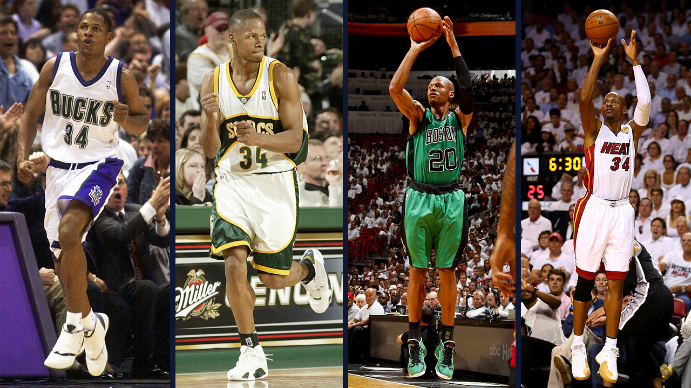

Ray Allen
One of the Greatest Shooters to Play Basketball
- 1 Hall of Fame Inductee
- 2 NBA Championships
- 2 All-NBA
- 1 All-Rookie Team
- 7 NBA Player of the Week
- 1 NBA Sportsmanship
- 1 Olympic Gold Medal
Awards
Walter Ray Allen Jr. (born July 20, 1975) is an American former professional basketball player.
He played 18 seasons in the National Basketball Association (NBA)
and was inducted into the Naismith Memorial Basketball Hall of Fame as a player in September 2018.
Allen is widely considered to be one of the greatest three-point shooters of all-time, and he held the record for most three-pointers made in a career before the record was broken by Stephen Curry in 2021.
CIf you're curious to know more about Ray Allen click the link